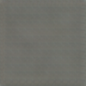

Give it a photo
Any photo works, though ones with a clear, central subject reconstruct most recognizably — this is an impression of your photo, not a copy of it.
Pick the part that matters
The network only works with square photos. Drag the box to reposition it, and use the slider to resize.
Watch it rebuild your photo
First, one instant forward pass through the encoder gives a rough starting guess. Then the network spends a few hundred steps refining that guess, and a few hundred more personalizing just its last layer to your specific photo — usually 20-90 seconds total, depending on your device. Every pixel below is the network's own output at that point in the process, not a lookup or a filter.
Take the impression with you
Neither QR code contains your photo — only the numbers needed to rebuild an impression of it through the same decoder anyone else on this page has. Scan one, or open its link, and this page reconstructs it fresh, right there.
Load a shared impression instead
Upload a photo of either QR code above (someone else's, or one you saved) to load that impression without uploading a photo of your own.
Wander around this point in latent space
Every point near your photo's 256 numbers is also a valid input to the decoder — most of them just don't correspond to any photo you've seen. Nudge it and watch what the decoder imagines nearby.
How this actually works — training vs. rendering, explained
There are two completely separate phases here, and only one of them ever touches your photo.
Training happened once, ahead of time, on a GPU, using 13,000 ordinary photos of animals, vehicles, and people — never yours. A pair of networks, an encoder and a decoder, learned together to compress a photo down to 256 numbers and rebuild it from just those numbers.
Rendering is what happens in your browser just now. Both networks came along, but only one of them touches your final result: the encoder runs once, instantly, purely to get the search started somewhere reasonable instead of from nothing. Every pixel of the actual answer comes from the decoder being nudged, step by step, toward your photo — a slower process, but one that measurably beats trusting the encoder's one-shot guess. The last stretch of that search also fits 70 extra numbers — a small personalization layered onto just the decoder's last layer — which is why the image kept sharpening even after the main shape had already settled.
The gray blocks are actual photo pixels. Coral is the encoder — it does run in your browser now, but only once, for that instant first guess. Teal is the decoder, the thing actually doing the work: the exact same weights, unchanged, that everyone else's browser also uses. Violet is the 256-number latent vector, the "impression" your photo gets reduced to. Not pictured: the small 70-number personalization that gets fitted to just the decoder's last layer during the second half of the search — it's specific to your photo alone, unlike everything else here.
Debug: reference latent check
Loaded via ?debugLatent=reference. The two images below should match
pixel-for-pixel — if they don't, the JavaScript decoder has diverged from the exported weights.
